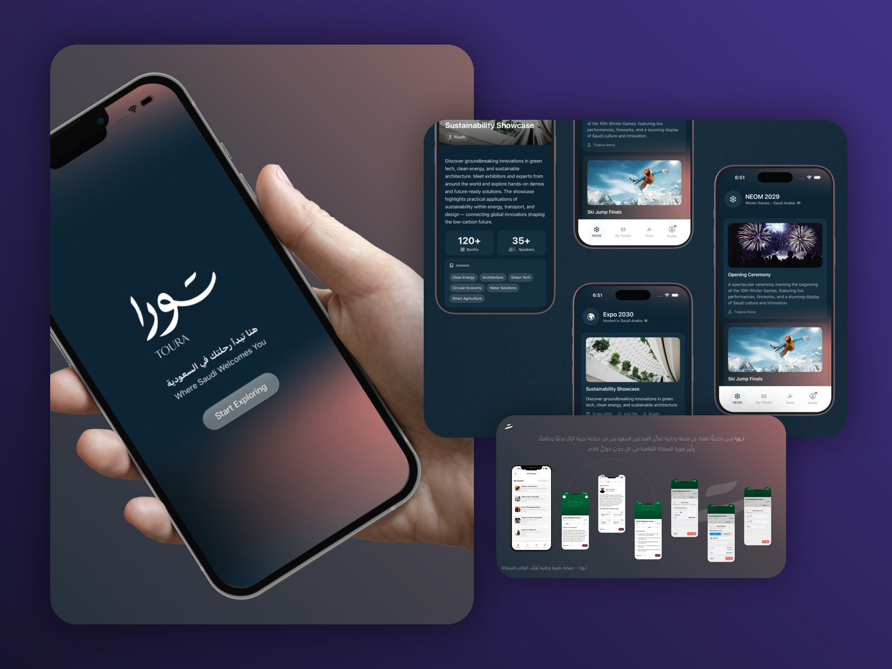
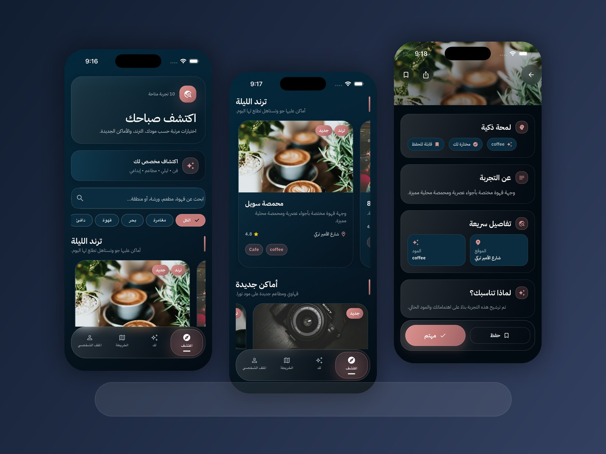

مصممة تُتقن الكود
أربط بين التصميم والتنفيذ، وأبني واجهات جميلة، واقعية، قابلة للتطوير، وأسهل على فرق التطوير تنفيذها بجودة عالية
UX/UI • Front-End • تصميم منتجات
من الفكرة إلى الواجهة، ومن الواجهة إلى منتج يعمل
مصممة UX/UI ومطورة Front-End من السعودية، أعمل على تطبيقات جوال، منصات مؤسسية، وتجارب رقمية مبنية حول المستخدم
لماذا أعمل معي؟
أربط بين التصميم والتنفيذ، وأبني واجهات جميلة، واقعية، قابلة للتطوير، وأسهل على فرق التطوير تنفيذها بجودة عالية
أصمم للعربية والإنجليزية مع فهم لاتجاه RTL، التوطين، بنية المحتوى، وتجارب المستخدم المناسبة للسياق المحلي
أهتم ببناء منتجات رقمية تدعم التحول في السعودية، خصوصًا في السياحة، الثقافة، الأنظمة المؤسسية، والخدمات المتمحورة حول المستخدم
أعمال مختارة

SwiftUI • تصميم منتجات • تطوير جوال
منتج سعودي للاكتشاف انتقل من الفكرة إلى النشر على App Store، ويجمع بين استراتيجية المنتج، UX/UI، التفكير ثنائي اللغة، والتطوير الفعلي للجوال.
UX/UI • Front-End • موقع مؤسسي • تجربة ثنائية اللغة
صممت وطورت موقعًا مؤسسيًا فاخرًا ثنائي اللغة لمكتب محاماة سعودي، مع التركيز على الثقة والوضوح وسهولة الاستخدام وإمكانية الوصول وتهيئة محركات البحث، ضمن تجربة رقمية تعكس الهوية المهنية للمكتب.
UX/UI • Front-End • صفحات علامات تجارية • تجربة ثنائية اللغة
صممت وطورّت صفحات فاخرة لعلامات بحرية، بتجربة ثنائية اللغة، واجهات متجاوبة، ونظام بصري أنيق يناسب عدة علامات تجارية

Flutter • تصميم منتجات • تجربة جوال ثنائية اللغة
منصة جوال ثنائية اللغة تقترح الأماكن والأنشطة والتجارب بناءً على مزاج المستخدم واهتماماته وموقعه
ASP.NET • Bootstrap • لوحات بيانات
ساهمت في تطوير واجهات أمامية، لوحات بيانات، وأدوات داخلية تدعم العمليات المؤسسية والمنتجات الرقمية الموجهة للإدارة التنفيذية
عني
لم يكن انتقالي إلى تصميم المنتجات مسارًا مباشرًا، وهذا تحديدًا ما أصبح إحدى أهم نقاط قوتي.
بدأت بخلفية في إدارة الأعمال، فتعلمت أن أنظر أبعد من الواجهة، وأن أفهم الأولويات، وطريقة العمل، والسبب الحقيقي وراء وجود المنتج.
منحني التصميم الجرافيكي أساسًا قويًا في الوضوح البصري والتسلسل والهوية. ثم نقلني UX/UI إلى فهم المستخدم وسلوكه وحل المشكلة الصحيحة. أما تطوير الواجهات فعلّمني كيف تتحول قرارات التصميم إلى منتج حقيقي يعمل.
اليوم أجمع هذه الخبرات بصفتي مصممة منتجات تكتب الكود أيضًا؛ أعمل على التجارب الرقمية ثنائية اللغة من الفكرة والتدفقات، إلى الواجهة النهائية والتسليم الجاهز للتنفيذ.
فهم الأهداف والقيود والأولويات والطريقة التي تتخذ بها الجهات قراراتها.
بناء أساس قوي في التواصل البصري، والتسلسل، واتساق الهوية.
الانتقال من شكل المنتج إلى طريقة عمله وشعور المستخدم به وقدرته على تلبية احتياجه.
ربط الاستراتيجية والتجربة والواجهة والتنفيذ التقني ضمن منتج واحد متماسك.
القدرات
مزيج مركز من تصميم المنتجات وتطوير الواجهات، مدعوم بالبحث، وإمكانية الوصول، والتنفيذ ثنائي اللغة.
تحويل احتياجات المستخدم وسلوكه وسياق العمل إلى فرص واضحة لتطوير المنتج.
تصميم تدفقات مفهومة وواجهات متجاوبة ونماذج تفاعلية تقلل التعقيد.
بناء أسس ومكونات قابلة لإعادة الاستخدام تعزز الاتساق وتسهل التسليم والتوسع.
تصميم تجارب شاملة تراعي التباين والتسلسل البصري ولوحة المفاتيح والبنية الدلالية.
تحويل قرارات التصميم إلى واجهات متجاوبة وقابلة للصيانة وجاهزة للتنفيذ الفعلي.
تصميم وتطوير تجارب جوال بفهم عملي لكيفية انتقال التصميم إلى منتج يعمل.
ربط قيمة المستخدم بأهداف العمل والأولويات والتنفيذ ضمن اتجاه منتج واضح.
تصميم منتجات ثنائية اللغة تبدو طبيعية بالعربية والإنجليزية، وليست مجرد واجهات معكوسة.
المقالات
كيف يحسّن الكود قرارات التصميم، التسليم، وجودة المنتج
مقالتخطيطات RTL، التايبوغرافي، التوطين، وتصميم المنتجات ثنائية اللغة
مقالكيف يدعم UX وتصميم المنتجات التحول الرقمي في السعودية
دراسة حالةمنصة سياحية سعودية صُممت بتفكير منتجي وتجربة جوال واضحة
دراسة حالةموقع بحري فاخر يركز على UX ثنائي اللغة والسرد البصري
دراسة حالةموقع قانوني فاخر ثنائي اللغة يركز على الثقة والوضوح وإمكانية الوصول وتهيئة محركات البحث.
تواصل
متاحة لفرص مهنية مختارةأقيم في المنطقة الشرقية بالمملكة العربية السعودية، ومتاحة لفرص UX/UI وتصميم المنتجات التي تهتم بتجربة المستخدم، وجودة التصميم، والتعاون الفعلي مع فرق التطوير.